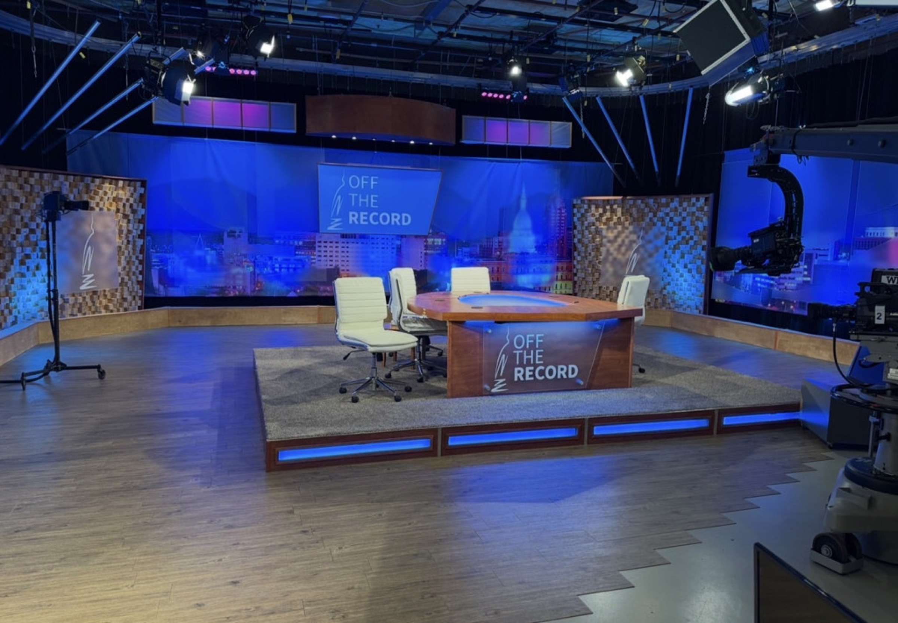
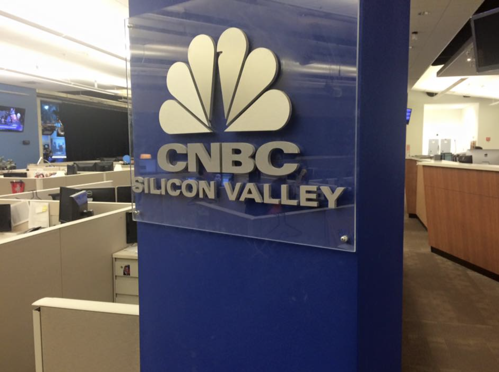
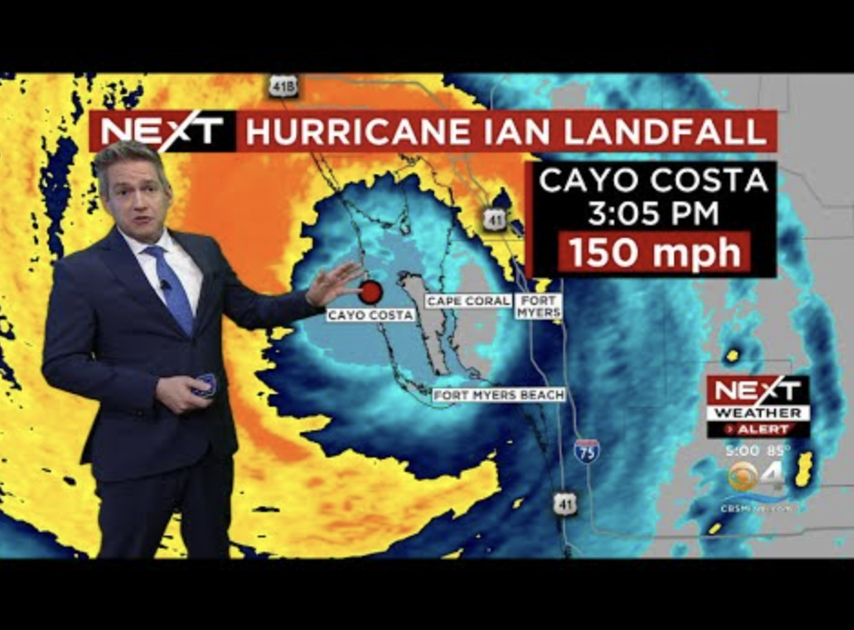
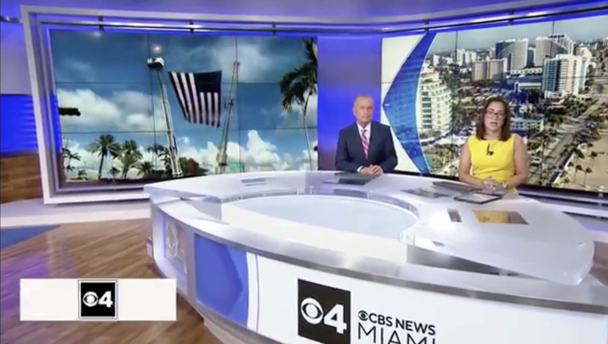

Impact storytelling · Distribution · Audience growth
Real voices. Not officials.
I build multiplatform newsrooms around journalism people can use: deeper reporting, stronger talent, smarter distribution and measurable audience growth. A Michigan native, twenty-five years across Detroit, Houston, Indianapolis, the Bay Area and South Florida, now at a Big Ten public media station.

Andrew Gillfillan
News Director, WKAR
Michigan State University
+101.6%
Daily-average active users on wkar.org. The digital audience roughly doubled.
Jan 1, 2025 – Jul 31, 2026 vs. prior 577 days
8.1%
Click rate on The Signal across 30 editions, roughly 7× the median for media publishers.
Launch to date · Feb 1 – Aug 9, 2026 · 30 original editions
30+
Employees recruited, hired and onboarded during my tenure at CBS News Miami.
Top-15 market · 100+ employees

Impact storytelling · Real voices · Distribution
How the work reaches people
Impact storytelling only counts if people see it. I go after the real voices in a story, then build the machinery that carries them: digital newsrooms, multiple platforms at once, a 24-hour streaming channel, and the work systems and distribution channels that keep all of it moving.

Original stream programming
Headliners, a stream-only weekly review I conceptualized and launched in two weeks, for the 24-hour channel whose launch I led.
Show creation · WOOD TV8
eightWest, the daily lifestyle show I conceptualized and launched. I built the show, the workflow and the brand.

NBC Bay Area newsroom · Silicon Valley
Working inside the NBC Bay Area newsroom taught me how to report on Silicon Valley—the companies, the people and the ideas reshaping daily life. I learned to look beyond the product launch and explain how the technology industry shapes our economy, our culture and the way we live and work.
Digital newsrooms
Rebuilt WKAR's digital operation from a declining site into one running roughly 3× the typical member station.
Work systems
Written operating manuals, contribution models and coaching frameworks, so products outlive the person who started them.
Distribution channels
Two newsletters, a politics destination and the promotional system that feeds them. Getting eyes on the work is editorial work.
Product builder, early
I conceptualized and launched eightWest at WOOD TV8: the show, the workflow and the brand. It still airs today and generates hundreds of thousands in revenue a year.
Impact filter
At CBS News Miami I helped install an impact-first filter that shifted coverage away from commodity crime and press releases. The 11 p.m. newscast climbed to #1 in the market.
Selected work
Four case studies · WKAR, 2025–2026The Signal
Conceived it, designed the identity, built the original product solo in four weeks, then wrote the contribution systems that let a small newsroom ship it every week.
Newsletter · Product · Editorial systems
Election 2026
A statewide politics brand built from nothing: identity, site and coverage plan, plus a full-time political reporter recruited to anchor it.
Brand · Site · Coverage plan
Audience & Growth
The digital audience roughly doubled and now runs about three times a typical member station. The floor moved, not just the peak.
Analytics · Benchmarks · Method
The Newsroom
The politics team, published as the front door of Election 2026. Behind it: hiring, coaching, and a freelance reporter system I implemented on arrival.
Talent · Hiring · Freelance
Coverage
The days that don't wait
Northern California firestorms and the morning the sky went orange. Hurricanes Ian and Nicole. Surfside, one year on. Wall-to-wall coverage I planned, staffed and ran.





Watch the coverage


NBC Bay Area · CBS News Miami · 2016–2023
See the full coverage archiveCareer →I believe in real voices. Not officials.